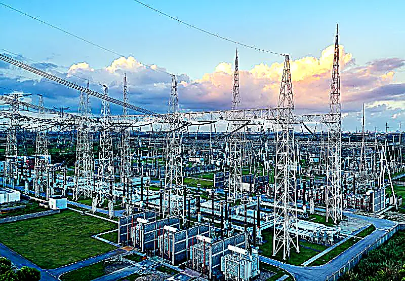
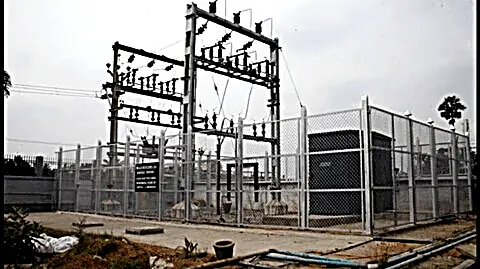

Every service below sits inside our A-Grade licence — delivered by the same engineering team, to the same standard, at any voltage class.

Gas-insulated substations compress an entire switchyard into sealed, metal-clad modules — the right choice where land, environment or security demand a compact footprint. We execute the complete GIS scope: bay installation, bus duct and cable connections, SF6 gas handling supervision, secondary wiring, protection integration and pre-energization checks.
GIS demands precision — cleanliness, gas discipline and exacting torque and clearance standards. Our teams work to the manufacturer's commissioning protocols, so the installation you accept is the installation the designer intended.
The open-yard substation is the backbone of the Indian grid — proven, maintainable and cost-effective at scale. We build AIS yards end to end: civil foundations, steel gantry and equipment structure erection, busbar and jumper works, isolators, CTs, PTs, circuit breakers, transformers and the complete earthing grid beneath it all.
From 11 KV distribution substations to 400 KV transmission-class yards, the discipline is identical — planned sequencing, controlled lifts, verified clearances and rigorous testing before any breaker closes.


A transformer is where a project's voltage chain changes character — and where poor handling becomes permanent damage. We deliver complete transformer packages: receipt inspection, unloading and placement onto plinths, radiator and accessories mounting, oil filling and conditioning support, HV/LV connections, OLTC and protection wiring, and pre-commissioning tests.
From distribution transformers on LT networks to power transformers in 400 KV-class substations, the sequence is the same: protect the asset, respect the oil, verify every reading.
Lines are how power actually travels — and how most of it is delivered in India. Our overhead scope covers survey-aligned pole and tower erection, foundation and stub setting, cross-arm and hardware fitting, conductor and earth-wire stringing, sag and tensioning to design, and jumpering at every termination.
We work across the classes the network needs: 11 KV and 33 KV distribution feeders, 132 KV/220 KV sub-transmission circuits, and EHV sections feeding 400 KV-class grid infrastructure.


This is where the network meets the facility. We install the HT intake that brings supply to your premises, the LT distribution that carries it to every load, and the metering, protection and switchgear in between — engineered for the load they will actually carry, not just the load on the drawing.
New installation, capacity extension or phased upgrade — we integrate with existing systems without the rework and downtime that unplanned electrical work creates.
Underground cable is the quiet infrastructure of modern developments — invisible when done right, expensive when done wrong. Our cable scope covers route surveys, trenching and ducting, cable laying with correct bending radii, cable tray and trench systems, jointing, terminations, identification and route documentation, and pressure/continuity testing before backfill.
HT feeder cables, LT distribution networks, substation interconnections and street-lighting circuits — each installed for its environment, each leaving behind a documented route.


Panels are where protection, control and measurement live — the operating brain of any installation. We install and commission the complete range: HT panels (VCB, RMU), LT panels (PCC, MCC, APFC, distribution boards), busbar trunking, and the metering and relay schemes that make them supervisable.
Every panel is positioned, cabled, torqued, labeled and function-tested before charging — because a panel commissioned properly is decades of quiet service.
Nothing in an electrical system is safe without a path to earth — and nothing protects a structure from lightning except a properly bonded air terminal network. We design-in and install earthing systems appropriate to soil and fault levels: electrode and pipe earthing, grids for substations and plants, and GI/copper conductor networks laid and tested to resistance values.
Lightning protection covers air terminals, down conductors and earthing integration for buildings, industrial sheds and substation structures — tested, documented and maintainable.


Everything electrical that exists outside your building — as one contract. Townships, industrial parks, campuses and developments typically procure their electrical scope fragmented: one vendor for the substation, another for cabling, a third for street lighting. We deliver it as a single coordinated package.
The package typically combines the intake substation, HT/LT network, transformers, panels, underground cabling, street and area lighting, and earthing — sequenced with your construction programme and commissioned as one system.
Every solar plant is an electrical system that happens to face the sun. We deliver the electrical scope of solar and renewable projects: DC and AC cabling, inverter-to-transformer connections, HT step-up infrastructure, switchyard works, earthing and lightning protection for arrays, and grid interfacing equipment up to the evacuation point.
As the country's renewable capacity grows, so does the need for contractors who understand both the generation asset and the grid it feeds — we work on both sides of that meter.
 Solar plant, Telangana
Solar plant, Telangana
Tell us the discipline, the voltage class and the site — we'll engineer the solution.